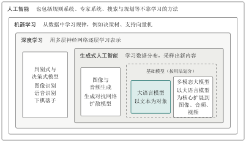
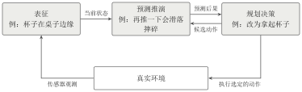

1.1 什么是大语言模型：从人工智能说起
谈论大语言模型时，人们常把人工智能、生成式人工智能、大模型、多模态、世界模型混在一起用。这些词并不处在同一个层级：有的是包含关系，有的是按不同标准做的划分。本节先用一张谱系图把它们摆到各自的位置上。结论是：人工智能、机器学习、深度学习、生成式人工智能层层包含，大语言模型是生成式人工智能中以文本为对象的一类；“基础模型”是按用法划分的说法；多模态模型扩展了输入输出的种类；世界模型学习的是“动作会带来什么后果”，与大语言模型是两条不同的路线。
1.1.1 人工智能、机器学习与深度学习
人工智能（Artificial Intelligence，AI）研究如何让机器完成通常需要人类智能才能完成的任务，例如感知、推理、规划、交流和行动[1]。它是一个按目标界定的研究领域，并不指某一种算法。实现这个目标有两种基本思路。一种是由人写规则：例如早期的垃圾邮件过滤器由工程师列出“含有‘中奖’且含有链接就判为垃圾邮件”这样的条件，再由程序逐条匹配。规则清楚易懂，但现实情况千变万化，规则永远写不全。另一种是让机器从数据中学规律，这就是机器学习。
机器学习（Machine Learning，ML）不要求开发者为每种情形写规则，而是给出大量样本（例如一百万封标注过“垃圾/正常”的邮件），让算法自动调整一个带参数的函数，使它在这些样本上尽量答对，并期望它在没见过的新样本上也答对。模型“学到”的东西就保存在这些参数里。
深度学习（Deep Learning，DL）是机器学习的一类方法，所用的函数是由很多层简单变换叠起来的神经网络。层数多带来的好处是：网络能够从原始数据（像素、声波、文字编号）开始逐层提炼出越来越抽象的表示，不必再由人设计特征[2]。2010 年代以来，语音识别、图像识别和机器翻译的性能跃升，主要都来自深度学习。
三者是层层包含的关系：人工智能范围最广，机器学习是实现它的主要途径，深度学习又是机器学习中最成功的一类方法（图 1-3）。大语言模型是一个深度神经网络，因此位于这一谱系之内。神经网络本身如何计算、如何训练，见第 2.1 节。

图 1-3 人工智能相关概念的谱系。实线框表示层层包含；虚线框表示“基础模型”是按用法划分的类别，与按处理对象划分的大语言模型、多模态大模型交叉，而非又一层包含
1.1.2 生成式、判别式与决策式人工智能
按照模型输出什么，可以把人工智能系统再分一次。
生成式人工智能（Generative AI）先从大量数据中学习这类数据“通常长什么样”，即学习数据的概率分布；使用时再按这个分布采样，产生训练集中没有出现过、但看起来属于同一类的新内容，例如文章、图像、语音、视频和代码。生成的内容也常被称为 AIGC（AI-Generated Content，人工智能生成内容）。学者李宏毅给过一个直观的说法：生成式人工智能让机器产生“复杂而有结构的物件”。“复杂”指可能的结果多到无法穷举——用 5000 个常用汉字写一段 100 字的话，可能的组合有 \(5000^{100}\) 种，不可能把它们一一列成选项；“有结构”指结果必须符合语法、逻辑或画面规律，不能是随机拼凑。这就决定了生成式模型不能“从选项里挑一个”，只能一个部分接一个部分地构造出来。第 1.2 节会看到，大语言模型正是一个词元接一个词元地构造回答。
与之相对的是判别式和决策式人工智能。判别式模型对输入做判断，输出取自一个有限的集合，例如图像识别判断“图中是猫还是狗”，信用评分给出“通过/拒绝”；决策式模型在给定目标下选择动作，例如自动驾驶中的路径规划、围棋程序的落子选择。表 1-1 对比了这两类系统。
表 1-1 生成式与判别式/决策式人工智能的对比
| 对比项 | 生成式人工智能 | 判别式/决策式人工智能 |
|---|---|---|
| 学习什么 | 数据本身的分布：一段文字、一张图“通常长什么样” | 输入与标签（或动作与回报）之间的对应关系 |
| 输出 | 新的、开放式的内容，可能结果无法穷举 | 有限集合中的一个类别、分数或动作 |
| 典型例子 | 写作、作图、配音、代码生成、药物分子设计、智能客服对话 | 图像识别、垃圾邮件过滤、信用评分、路径规划 |
| 如何评价 | 难以只用“对/错”评价，需要看事实性、连贯性、是否符合要求 | 通常有明确的正确答案或可计算的回报 |
生成式人工智能的应用大体分三类：内容创作，如撰写文章、生成插图和音乐；工业与科研辅助，如编写代码、设计候选药物分子；交互体验，如智能客服对话、虚拟主播直播。
辨析
“用了深度学习”不等于“生成式”。图像识别、人脸检测等应用虽然也用深度神经网络，但输出的是类别或位置，属于判别式人工智能。反过来，生成式模型也能完成判别任务：让大语言模型“生成”出“正面”或“负面”两个字，就完成了情感分类。区分的依据是任务的输出形式，而不是用了什么网络。另外，生成内容中的“新”只表示训练集里没有出现过这个组合，不表示它真实、可靠或具有原创性。
1.1.3 大语言模型、基础模型与多模态模型
大语言模型 大语言模型是以文本为主要处理对象、参数规模很大、在海量文本上训练出来的深度神经网络。这个定义包含四个要素：它是一个深度学习模型（几乎都采用 Transformer 这种神经网络结构，第 1.3.3 小节介绍它的由来，它的机制见第 2.3 节）；它从大量文本数据中学习语言的规律和其中蕴含的知识；它具备自然语言理解与生成能力；同一个模型可以完成问答、摘要、翻译、信息抽取、写代码等多种自然语言任务。
“大”首先指参数多。业内常用“7B”“70B”这样的写法表示参数量，其中 B 是英文 billion（十亿）的缩写，7B 即 \(7\times10^{9}\) 个参数。2020 年的 GPT-3 有 1750 亿个参数[3]，此后的前沿模型普遍在千亿到万亿量级。但参数量不是唯一标准：训练数据的数量与质量、训练计算量和训练方法共同决定能力，一个数据充足、训练得当的小模型可以胜过训练不足的大模型（第 1.3.4 小节）。
基础模型 2021 年，斯坦福大学的研究者提出基础模型（Foundation Model）一词，指在广泛数据上大规模训练、之后可以通过提示或微调适配多种下游任务的模型[4]。这个词强调的是模型的用法：先花大成本训练一个通用的“底座”，再由许多应用在它上面搭建。它也提醒了一个风险：底座的缺陷（偏见、错误知识、安全漏洞）会被所有下游应用继承。
多模态模型 多模态模型把处理对象从文本扩展到图像、音频、视频等其他“模态”的数据。一种常见做法是：用一个专门的编码器把图像切成小块并转换成一串向量，使它们和文字词元处在同一个表示空间里，再与文字一起送入语言模型统一处理；需要输出图像或语音时，再接上相应的生成模块。这样构成的系统称为多模态大模型（Multimodal LLM，MLLM），只处理图像和文字的又常称视觉语言模型（Vision-Language Model，VLM）。它能完成看图描述、图表与文档理解、视频理解、语音对话等任务。多模态模型通常以大语言模型为语言与推理的核心，但并不只是“给语言模型开一个图片入口”：不同模态的数据如何对齐、如何评测，都比纯文本复杂得多。
辨析
基础模型和大语言模型是按不同标准划分的，不是同义词。“大语言模型”按处理对象和规模命名，“基础模型”按用法命名。大多数大语言模型被当作基础模型使用，但基础模型也可以是图像模型或多模态模型；反过来，一个只为某项任务训练、不再适配其他任务的语言模型就不算基础模型。同样，“大模型”是中文语境中的口语说法，可能指大语言模型，也可能泛指各种大规模基础模型，阅读时要看上下文。
1.1.4 世界模型：另一条路线
大语言模型从文字中学习，文字是人对世界的描述。另一条研究路线希望模型直接学习世界本身如何变化，这就是世界模型（World Model）：一个能够学习现实世界的空间、物理和因果规律，并在执行动作之前预测动作后果的“虚拟世界模拟器”。这一方向有几种代表性的提法：NVIDIA 首席执行官黄仁勋提出的“物理人工智能”（Physical AI），强调让机器人和自动驾驶系统理解物理世界；图灵奖得主杨立昆（Yann LeCun，2025 年底离开 Meta 并创办专注世界模型的 AMI Labs）提出的联合嵌入预测架构（Joint Embedding Predictive Architecture，JEPA），主张在抽象表示空间里预测未来，而不是逐像素地预测画面[5]；李飞飞提出的“空间智能”（Spatial Intelligence），强调理解和生成三维空间。
世界模型的工作方式可以概括为一个“看—想—做”的闭环（图 1-4）：
表征：把相机、雷达等传感器的观测转换成内部状态，看懂环境里有哪些物体、各在什么位置、彼此什么关系；
预测推演：输入“当前状态 + 一个候选动作”，推演下一时刻的状态。例如“把桌边的杯子再推一下”，模型应预测出杯子滑落、摔碎；
规划决策：在内部这个“虚拟沙盘”里试验多种动作方案，比较预测结果，选出最好的一种再到真实世界中执行；执行后的新观测又回到第一步。
这三个部分通常分别对应感知编码器（encoder）、模拟器（simulator）和规划器（planner）；如果还需要把预测出的内部状态还原成画面，则另配渲染器（renderer）。

图 1-4 世界模型的工作闭环。规划模块在内部反复提出候选动作、由预测模块推演后果，选定后才在真实环境中执行；执行后的新观测重新进入表征模块
表 1-2 对比了大语言模型与世界模型。二者可以结合：大语言模型负责理解人的目标、分解任务和与人沟通，世界模型负责预测物理环境的变化，这是机器人、自动驾驶等具身智能（Embodied AI，有身体、在物理世界中行动的智能系统）的常见设想。
表 1-2 大语言模型与世界模型的对比
| 对比项 | 大语言模型 | 世界模型 |
|---|---|---|
| 学习目标 | 根据上文预测下一个词元 | 根据当前状态和动作预测下一状态 |
| 主要数据 | 文本（多模态模型还有图像、音频） | 视频、传感器数据、交互轨迹、仿真数据 |
| 对物理规律的掌握 | 只能从文字描述中间接学到，没有直接的物理约束 | 直接学习重力、碰撞、遮挡、时间先后等规律 |
| 典型用途 | 对话、写作、编程、信息处理 | 机器人、自动驾驶、游戏与仿真、具身智能 |
辨析
能力表现不等于内部理解。大语言模型能写出解释、计划和推理步骤，但它的基本训练目标仍是根据上下文预测下一个词元。有研究发现，语言模型内部确实形成了对地理位置和时间先后的线性表示[6]，说明它学到的不只是表面的词语搭配；但这类发现并不意味着模型以和人相同的方式理解世界，也不保证它在具体问题上不犯常识错误。评价模型时，要把“输出看起来如何”“内部学到了什么”和“在真实世界里能否可靠完成任务”分开讨论。